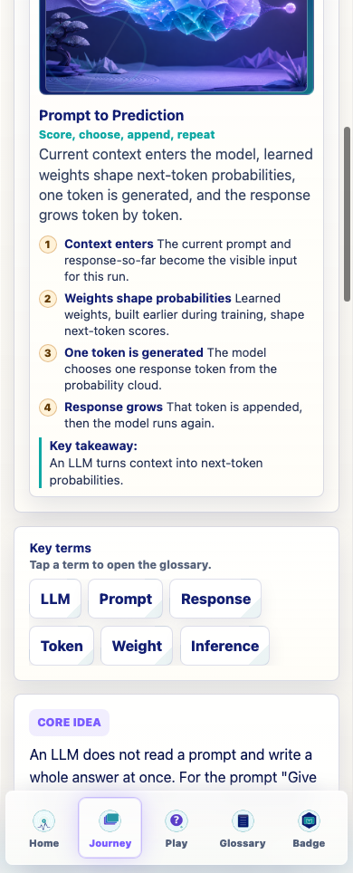
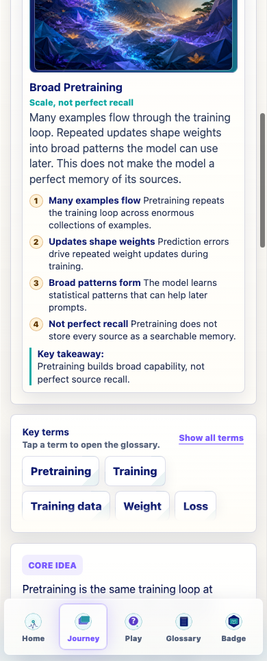
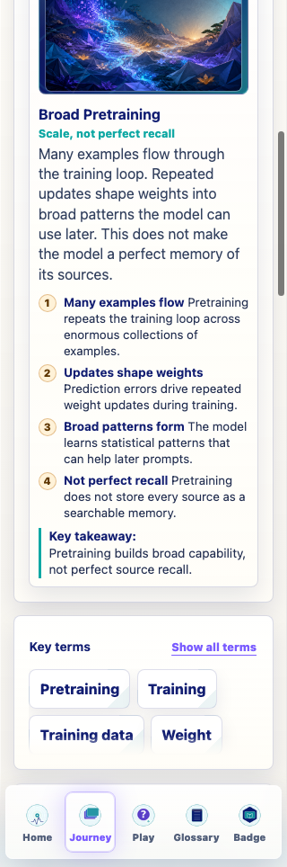
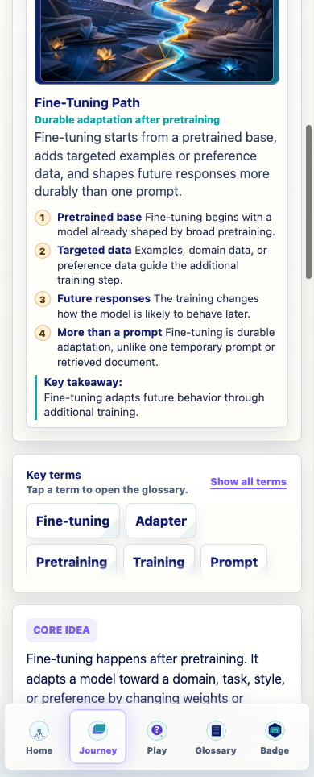
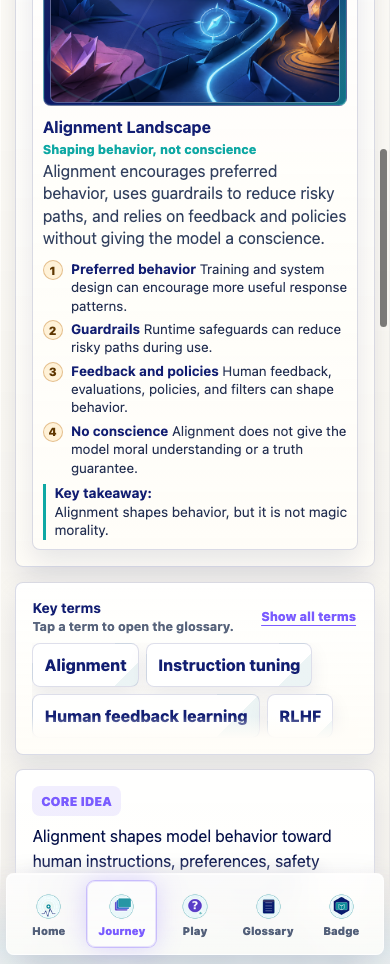
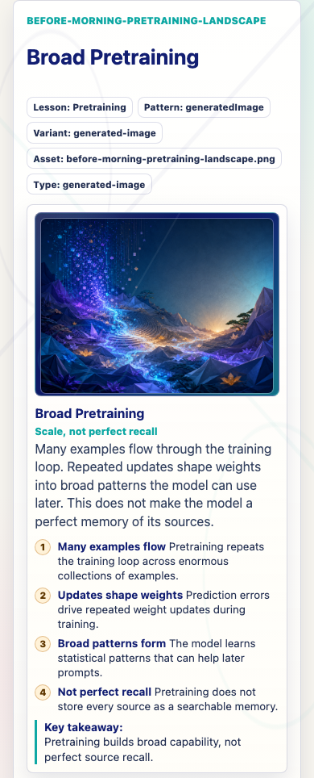
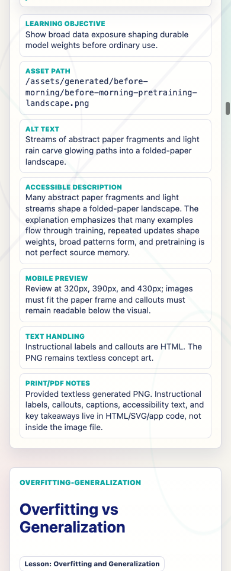

Prompt Life v0.21.1
Generated Visual Copy Cleanup
This pass removes internal asset-generation language from learner-facing visual copy while preserving implementation metadata on review routes.
Date: June 6, 2026. Project: KevinHegg/promptlife.
What Changed
- Replaced generated-image-backed learner captions for What Is an LLM?, Pretraining, Fine-Tuning, and Alignment.
- Updated generated visual accessible descriptions to describe the concept and image, not the production process.
- Updated the Pretraining callouts and key takeaway to clarify broad durable pattern learning without perfect source recall.
- Changed the learner fallback heading from
Visual asset unavailable.toVisual unavailable.. - Bumped the visible app version to
v0.21.1. - Added learner-facing copy guardrails for future visual and generated asset work.
Files Changed
src/components/VisualAids.tsxsrc/data/visualAssets.tssrc/main.tsxdocs/REVIEW_NOTES.mddocs/design/LEARNER_FACING_COPY_GUARDRAILS_V0_21_1.mddocs/design/screenshots/v0-21-1-*.pngdocs/design/screenshots/v0-21-1-screenshot-manifest.jsondocs/design/prompt-life-v0-21-1-generated-visual-copy-cleanup-report.htmldocs/design/prompt-life-v0-21-1-generated-visual-copy-cleanup-report.pdf
Phrases Removed
- A textless model-cloud scene is paired with HTML callouts
- A textless folded landscape is paired with HTML callouts
- A textless targeted-path scene is paired with HTML callouts
- A textless alignment garden is paired with HTML callouts
- textless conceptual image
- surrounding HTML callouts
- Visual asset unavailable.
New Pretraining Copy
Caption
Many examples flow through the training loop. Repeated updates shape weights into broad patterns the model can use later. This does not make the model a perfect memory of its sources.
Callouts
- Many examples flow: Pretraining repeats the training loop across enormous collections of examples.
- Updates shape weights: Prediction errors drive repeated weight updates during training.
- Broad patterns form: The model learns statistical patterns that can help later prompts.
- Not perfect recall: Pretraining does not store every source as a searchable memory.
Key Takeaway
Pretraining builds broad capability, not perfect source recall.
Other Visual Copy Changes
- What Is an LLM? now explains current context, learned weights, next-token probabilities, generated token, and append-repeat.
- Fine-Tuning now explains pretrained base, targeted examples or preference data, and durable future response shaping.
- Alignment now explains preferred behavior, guardrails, feedback and policies, and the no-conscience limit.
- Review gallery still exposes asset metadata for QA and documentation.
Verification
- Passed:
npm run typecheck - Passed:
npm run buildwith existing Vite large-chunk warning. - Passed:
npm run build:pageswith existing Vite large-chunk warning. - Passed:
npm run audit:answers - Passed:
git diff --check - Screenshot QA: learner visual panels reported
badLearnerCopy: false,overflowX: false, and isolated progress storage[].
Known Issues
- The Vite large-chunk warning remains from the existing bundle shape.
- The review route intentionally contains production metadata. That is correct for QA, but it should stay out of normal Journey screens.
Next Step
The cleanup is complete. The next sensible product step is the Decision Room implementation pass, using coded visuals and revised lesson architecture without adding generated assets yet.
Screenshots






